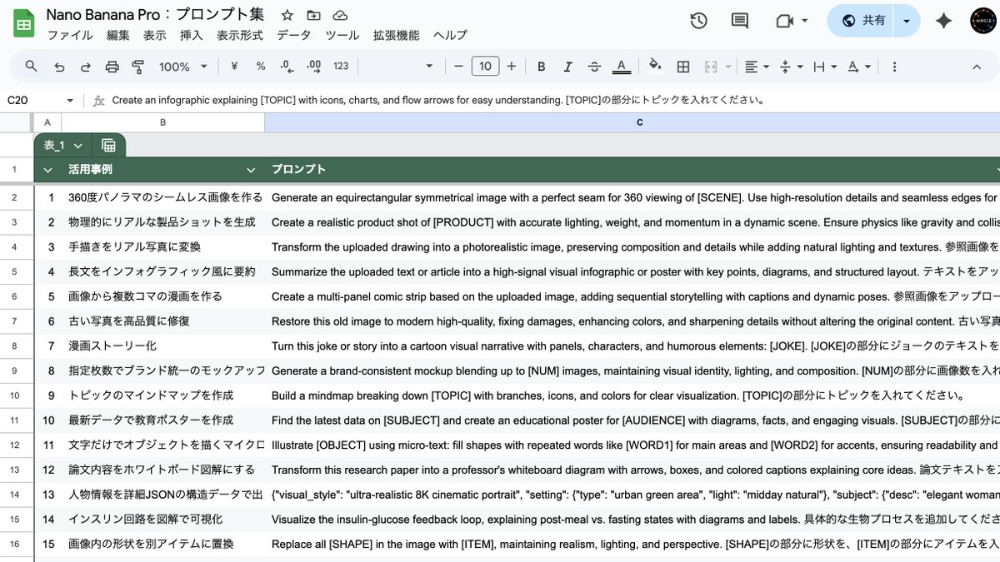
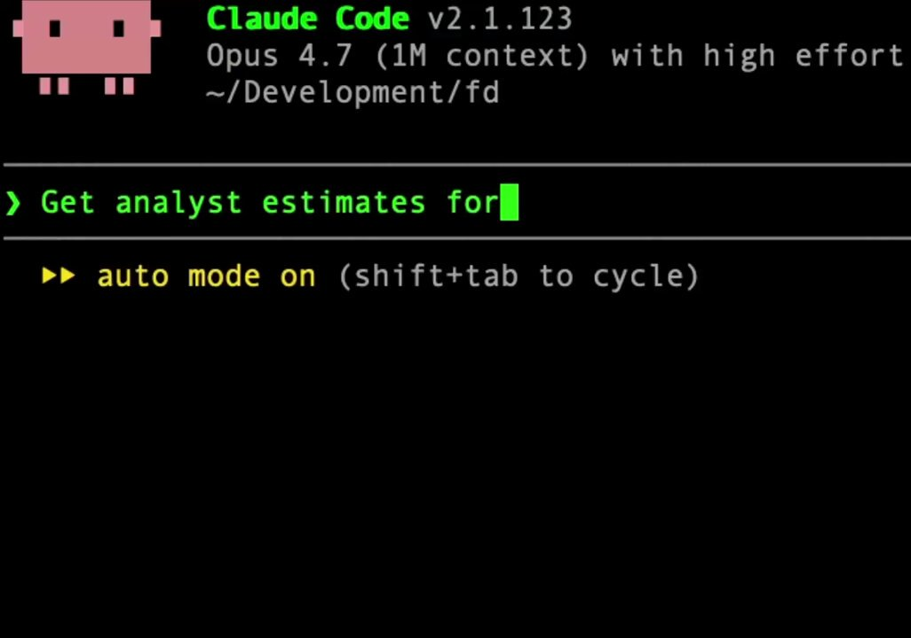
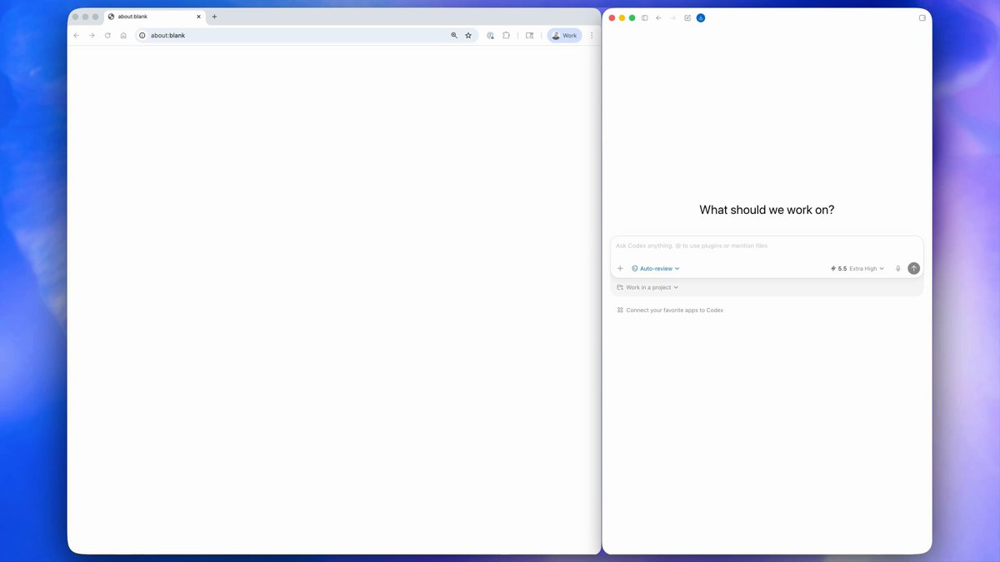
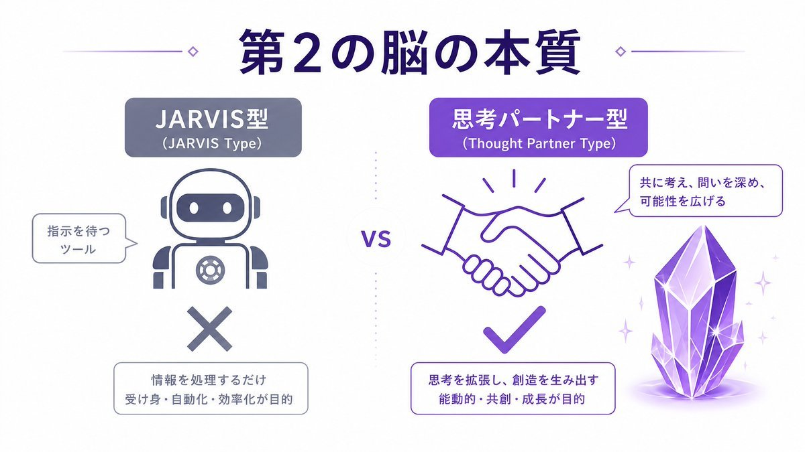
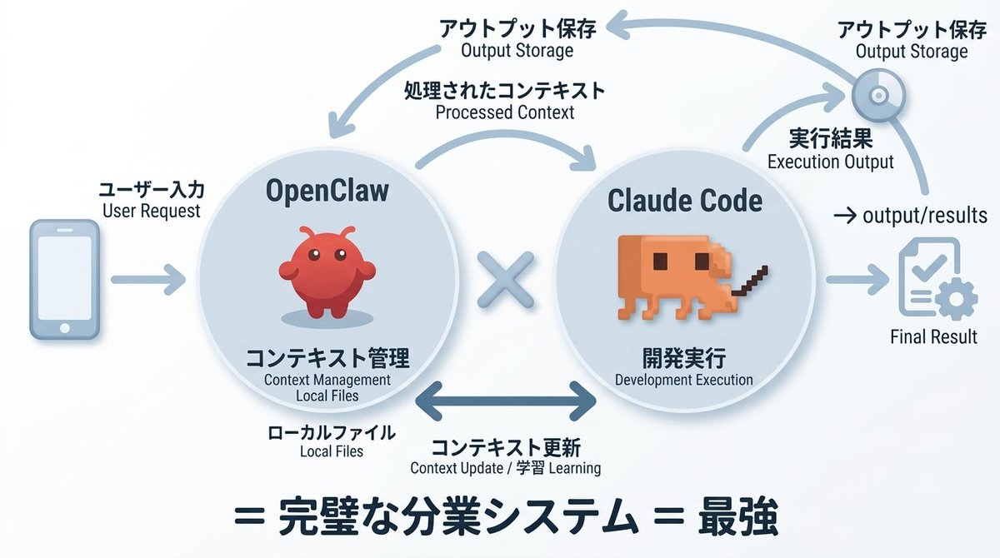
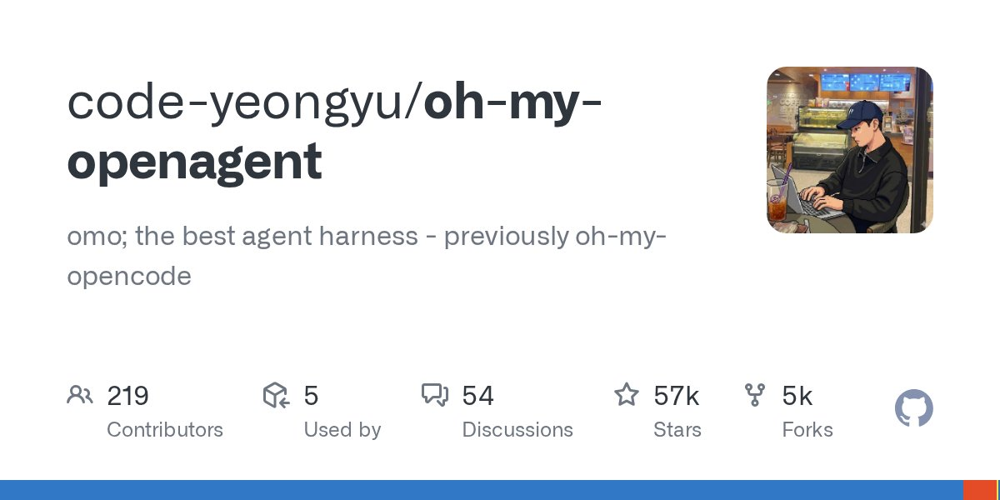
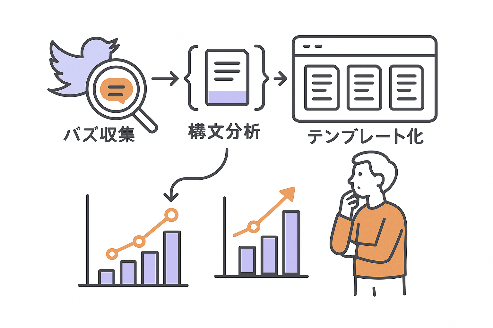
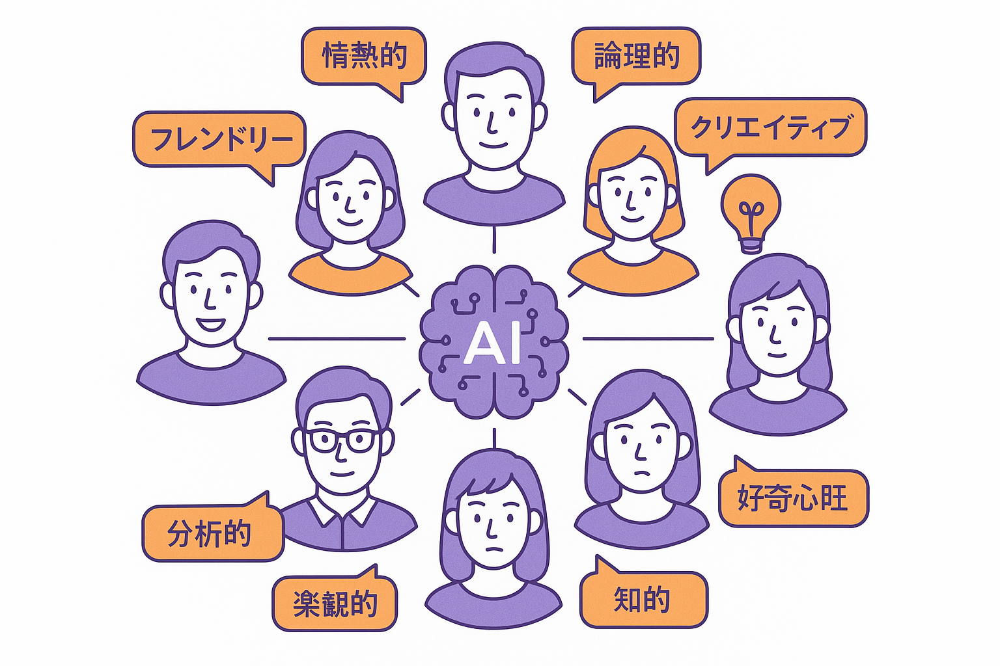

BUSINESS 03
8アカウント、46,000人以上のフォロワー。
投稿の企画から配信まで、全部AIが運用しています。
— Automated, analyzed, optimized.

PLaiのSNS運用は「勘」や「センス」に頼りません。毎朝、X上でバズっている投稿を自動収集し、フック（冒頭の引き）、構文パターン、CTA（行動喚起）、メディアの使い方を構造的に分析。再現可能なテンプレートに落とし込みます。
そのテンプレートをもとに、各アカウントのペルソナに合わせた投稿案を自動生成。最適な時間帯（6時・8時・12時・21時）に45分間隔で自動配信。投稿1本あたり151〜200文字、メディア必須というルールもAIが自動で遵守します。
TOP PERFORMERS
AIが生成した投稿が、数千いいね・数百RTを獲得。すべて異なるアカウントから、AIが自動生成した投稿です。

【事件】 イーロン・マスクが「何でも10倍速で学ぶ方法」を解説した動画が見つかった 正直、ビジネス書10冊読むよりこの動画1本の方が価値あるレベルでヤバい。 彼のフレームワーク👇 ・知識を「木」のように構造化する ・幹（基本原理）を先に掴んで、枝葉は後から ・「そもそもこれ必要？」と全ての前提を疑う
続きを見る
日本最大級の学生AI団体が最速で作成した海外で話題の『Nano Banana Pro 活用法 & 完全版プロンプト集（34選）』欲しい人いますか？ スプシからコピペすればそのまま使えますし、生産性爆上がりします。 ⚠️3日間限定：配布条件 投稿に「いいね」&「リツイート」 リプに「プロンプト」
続きを見る

【実は】「Netflix観る代わりに今夜1時間だけObsidian + Claudeを構築しろ」が海外で刺さっている😳 Obsidian + Claude = 毎日勝手に賢くなるAI。 1時間で何ができるか👇 ・Obsidianをインストール ・Claude Codeを接続 ・CLAUDE.mdに自分のルールを書く
続きを見る
【速報】 Claude Codeから 17,000以上の株式データに 数秒でアクセスできるようになりました😳 接続方法も簡単👇 Claude Codeを開いてこれを貼るだけ。
続きを見る

【速報】 CodexがついにChrome上で直接動くようになりました！！！ しかもこれ、ただブラウザ操作ができるだけじゃなくて👇 ・Webページの中身を読み取れる ・フォームに自動入力できる ・スクリーンショットを撮って分析できる
続きを見る

【完全版】Claude Code + Obsidianで「AI第二の脳」を「たった5分」で作る方法 ChatGPTに毎回同じ説明してない？ Claude Code × Obsidianなら 一度設定すれば、AIが勝手に賢くなり続ける。 この記事で全手順を公開👇
続きを見る

正直、今日「Claude Code Channels」 が出たことで マジで AGIに一歩近づいた気がする。 今までの OpenClawの弱みってここだった👇 ・開発タスクをOpusで本気で回すと API代が普通に高すぎる ・しかも認証問題で OpenClawからClaudeを厳密には叩くのダメ ・かといって本格的な開発に関して言えばOpusが最強だから使いたい だから自分はずっと ・軽〜中レベル自動化 → OpenClaw ・ガチ開発 → Claude Code で分けてた。 でも今回のClaude Code Channels これで構造が変わる気がしてる。
続きを見る

正直、oh-my-openagent やばいな。 Claude Code、Codex、Gemini、OpenCode… 全部のAIエージェントを統合管理できるOSSが登場。 1つのターミナルから全エージェントを切り替え可能。 しかもセッション履歴も統合管理できる。
続きを見る
【事件】 イーロン・マスクが「何でも10倍速で学ぶ方法」を解説した動画が見つかった 正直、ビジネス書10冊読むよりこの動画1本の方が価値あるレベルでヤバい。 彼のフレームワーク👇 ・知識を「木」のように構造化する ・幹（基本原理）を先に掴んで、枝葉は後から ・「そもそもこれ必要？」と全ての前提を疑う
続きを見る
日本最大級の学生AI団体が最速で作成した海外で話題の『Nano Banana Pro 活用法 & 完全版プロンプト集（34選）』欲しい人いますか？ スプシからコピペすればそのまま使えますし、生産性爆上がりします。 ⚠️3日間限定：配布条件 投稿に「いいね」&「リツイート」 リプに「プロンプト」
続きを見る
【実は】「Netflix観る代わりに今夜1時間だけObsidian + Claudeを構築しろ」が海外で刺さっている😳 Obsidian + Claude = 毎日勝手に賢くなるAI。 1時間で何ができるか👇 ・Obsidianをインストール ・Claude Codeを接続 ・CLAUDE.mdに自分のルールを書く
続きを見る
【速報】 Claude Codeから 17,000以上の株式データに 数秒でアクセスできるようになりました😳 接続方法も簡単👇 Claude Codeを開いてこれを貼るだけ。
続きを見る
【速報】 CodexがついにChrome上で直接動くようになりました！！！ しかもこれ、ただブラウザ操作ができるだけじゃなくて👇 ・Webページの中身を読み取れる ・フォームに自動入力できる ・スクリーンショットを撮って分析できる
続きを見る
【完全版】Claude Code + Obsidianで「AI第二の脳」を「たった5分」で作る方法 ChatGPTに毎回同じ説明してない？ Claude Code × Obsidianなら 一度設定すれば、AIが勝手に賢くなり続ける。 この記事で全手順を公開👇
続きを見る
【OpenClaw：10時間セミナーアーカイブ＆有料級note無料配布🎁】 この度、OpenClaw 5DAYS講座（第1回〜第4回）の 全セミナーアーカイブ（計10時間超）と、 全内容を1万字以上にまとめた有料級noteを、 完全無料で公開することにしました🔥
続きを見る
正直、oh-my-openagent やばいな。 Claude Code、Codex、Gemini、OpenCode… 全部のAIエージェントを統合管理できるOSSが登場。 1つのターミナルから全エージェントを切り替え可能。 しかもセッション履歴も統合管理できる。
続きを見るPLaiが運用する8つのXアカウントには、それぞれ異なるペルソナ・専門領域・語り口が設定されています。AIイベント情報を発信するアカウント、Claude Code特化の個人ブランド、就活×AI教育のニッチアカウントなど、ターゲットが全く異なります。
AIがアカウントごとのルールファイルを参照し、語尾、絵文字の使い方、専門用語のレベルまで自動で切り替え。人間が1つのアカウントを運用するのと同じ一貫性を、8つ同時に維持します。
LIVE ACCOUNTS — 2026.05.14
すべてPLaiがAIで企画・生成・投稿しているアカウントです。下記のフォロワー数はX APIで取得した最新値（2026年5月14日時点）。累計 55,931 フォロワー を、人間の常時運用なしで維持・成長させています。
Claude Code Studio @ Japan
@ClaudeCode_love
24,676 followers
+22,637 / 30日
Aircle｜学生AIコミュニティ
@AiAircle34052
13,807 followers
+1,000 / 30日
Codex Studio
@Codestudiopjbk
6,317 followers
+6,224 / 30日
いち＠OpenClawガチ勢
@ichiaimarketer
5,067 followers
+511 / 30日
AIの思考
@AIbusiness9
2,235 followers
+1,863 / 30日
すみか@個人開発
@sumika45379
2,011 followers
+1,756 / 30日
オープンソース研究所
@codexstudio_jp
1,198 followers
+1,194 / 30日
りゅう@Obsidianガチ勢
@obsidianstudio9
620 followers
+398 / 30日
AI AUTOMATION RESULT
1年間の新規フォロワー獲得推移です。最初は週1,000〜2,000人ペースだったものが、AI完全自動化の最適化が進むにつれ加速。直近3週間で25,000人が一気に増加しました。
 Hermes
投稿自動化
Hermes
投稿自動化
SERVICES

01
X上のバズ投稿をAPI経由で自動収集し、フック・構文・CTA・メディアパターンを構造分析。【速報】【事件】などシーン別テンプレートに落とし込み、再現可能な投稿戦略を設計します。
02
海外AIニュース・ツールリリース情報を毎朝自動収集し、アカウントごとのペルソナに合わせた投稿案を生成。最適時間帯に45分間隔で自動配信します。画像・動画メディアも自動生成。

03
アカウントごとに異なるペルソナ・トーン・専門領域を設計。ルールファイルに基づきAIが語り口を自動切替し、ブランドボイスの一貫性を維持。複数アカウントの同時運用を実現します。
DAILY FLOW
AM 6:00
直近36時間のバズ投稿を自動収集。エンゲージメント率・構文パターン・メディアタイプを分析し、今日使えるネタとテンプレートを選定します。
AM 7:00
アカウント別に投稿案を自動生成。文字数（151-200字）、メディア有無、重複チェック、ペルソナ整合性をバリデーション。基準を満たさない投稿は自動で再生成。
AM 8:00〜
投稿を自動登録し、45分間隔で配信開始。投稿後のエンゲージメントデータは次回のバズ分析にフィードバックされ、継続的に精度が向上します。